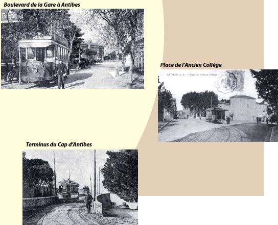

Le patrimoine contemporain - Les déplacements - Le tramway de Nice & du littoral
La ligne d’Antibes, qui longe le littoral azuréen, constitue le prolongement de celle qui se termine à Cagnes. Le nouveau tracé part de la gare de Cagnes, point terminus du tramway de Nice, et suit sur près de 9 km l’actuelle RD 6007. En arrivant à Antibes, le tramway franchit la voie ferrée du P.L.M., continue jusqu’à l’avenue venant de la gare et gagne la place Macé. Sur le côté Sud de la place, la voie T.N.L. coupe la voie des tramways de Cannes. Ce cette place, la ligne emprunte le boulevard Albert-Ier et, arrivée en bord de mer, tourne à angle droit pour suivre le littoral vers le Sud. La voie, jusqu’alors établie en palier, va maintenant grimper peu à peu la route de crête du Cap d’Antibes, pour se terminer peu après le Grand Hôtel du Cap, au point où la route amorce sa descente vers Juan-les-Pins.
Le prolongement de Cagnes au Cap d’Antibes est ouvert à l’exploitation le 1er Février 1909. La nouvelle liaison Cagnes-Antibes, tracée parallèlement à la voie ferrée du P.L.M. sur toute sa longueur, traverse un secteur peu construit : le trafic ne peut être que très faible. De ce fait, les tramways circulent entre Nice et Antibes à la fréquence de deux heures seulement, le trajet durant une heure et demie jusqu’à la place Macé. Par contre, la navette qui dessert le Cap d’Antibes au départ de la gare s’effectue en 20 minutes.
